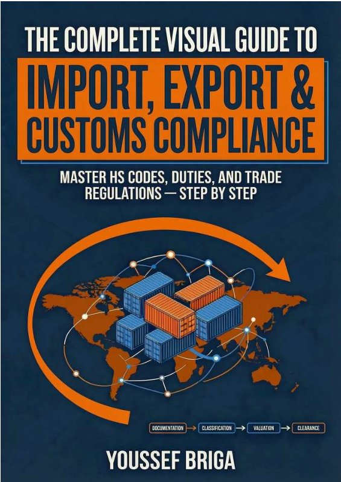

Collection Douane & Commerce International
The Complete Visual Guide to Import, Export and Customs Compliance
Master HS Codes, Duties and Trade Regulations — Step by Step
Le seul guide douanier pensé entièrement pour l'œil : mind maps, flowcharts et schémas de décision remplacent le texte réglementaire pour rendre chaque mécanisme du dédouanement immédiatement lisible.
Présentation
La douane n'est pas un labyrinthe, c'est un système. The Complete Visual Guide to Import, Export and Customs Compliance est le seul ouvrage qui vous en donne la carte complète, littéralement.
Après dix-huit années passées au cœur des opérations douanières, Youssef Briga a fait un pari radical : au lieu d'un manuel de plus saturé de texte réglementaire, offrir un guide entièrement pensé pour l'œil. Mind maps, flowcharts, arbres de décision, comparatifs visuels : chaque concept du dédouanement, du premier flux commercial jusqu'à la déclaration détaillée, y est traduit en image avant d'être expliqué en mots.
Dix concepts structurent l'ouvrage, de l'univers douanier et ses acteurs jusqu'à la transformation digitale et l'intelligence artificielle, en passant par les étapes du dédouanement import et export, le contrôle et la sélectivité, les régimes économiques, la classification tarifaire dans le Système Harmonisé, les règles d'origine, la valeur en douane et la fiscalité douanière. Rien n'est laissé de côté ; tout est rendu lisible.
Ce choix n'est pas cosmétique. Un opérateur qui visualise le flowchart d'un dédouanement portuaire le retient et l'applique bien plus vite qu'en lisant trois pages de procédure. Un étudiant qui voit la mécanique des Règles Générales Interprétatives posée sous forme d'arbre de décision la comprend en une page, là où d'autres ouvrages en demandent dix.
Ce guide s'adresse aux déclarants en douane, responsables logistique et compliance, importateurs et exportateurs, étudiants en commerce international et formateurs qui cherchent un support pédagogique réellement actionnable. Il fonctionne aussi bien comme parcours d'apprentissage complet que comme outil de référence rapide, à rouvrir au moment précis où une question se pose sur le terrain.
En 2026, la frontière est devenue un système technique et algorithmique où l'à-peu-près coûte cher. Ce guide ne promet pas de tout savoir sur la douane. Il promet de tout comprendre, du premier coup d'œil.
concepts illustrés, de l'univers douanier à l'intelligence artificielle
visuel : mind maps, flowcharts, arbres de décision
grands domaines couverts : classification, valeur, origine, régimes
Sommaire
Sommaire complet des 10 concepts — cliquez sur un concept pour déplier le détail des sections.
Concept 1The Customs Universep. 7
- 1.1 What is Customs? A Mind Map of the systemp. 8
- 1.2 The Three flows of a Trade transactionp. 10
- 1.3 Who does what? The Actors mappedp. 12
- 1.4 Why we declare? The universal mandatep. 15
- 1.5 The journey of a shipment: the big picturep. 17
- 1.6 Import vs Export vs Transit: Key differencesp. 19
- 1.7 The Customs Declaration: What is it?p. 22
- 1.8 Authorized Actors: Who can declare?p. 25
- 1.9 Paper vs Electronic Customs: The shiftp. 28
Concept 2Import Clearance — Step by Stepp. 31
- 2.1 The Import Clearance flowchart: Full pathp. 33
- 2.2 The Summary Declaration: First Stepp. 35
- 2.3 Goods Placement under Customs Supervisionp. 38
- 2.4 Land Border Clearance: Step by Stepp. 40
- 2.5 Sea Port Clearance: Step by Stepp. 42
- 2.6 Air Freight Clearance: Step by Stepp. 44
- 2.7 The Detailed Declaration: Fields Explainedp. 47
- 2.8 Documents Checklist for Importp. 49
- 2.9 Simplified Import Declaration: When & How?p. 52
- 2.10 Payment of Duties: Methods & Timelinep. 56
- 2.11 Release & Delivery: Final Stepsp. 60
Concept 3Export Clearance Processp. 62
- 3.1 The Export Clearance Flowchartp. 63
- 3.2 Export Declaration: Required Documentsp. 67
- 3.3 Simplified Export Declarationp. 71
- 3.4 Export Prohibitions & Restrictionsp. 74
- 3.5 Export Duties: When They Apply?p. 77
- 3.6 VAT Refund on Exports: The Mechanismp. 80
- 3.7 Transit Export: Goods Crossing Third Countriesp. 84
Concept 4Control & Selectivityp. 91
- 4.1 The Risk Management System: Overviewp. 92
- 4.2 Green / Orange / Red Channel Systemp. 95
- 4.3 How Risk Scores are builtp. 97
- 4.4 Documentary Control: What do they Check?p. 99
- 4.5 Physical Inspection: The Processp. 101
- 4.6 Deferred Control & Post-Clearance Auditp. 103
- 4.7 Traveller Control: Baggage Rulesp. 106
- 4.8 Maritime Arrival Control at Portp. 109
- 4.9 AEO Status: The Trusted Traderp. 111
- 4.10 Value Reconstruction: When Customs Disagreesp. 113
- 4.11 Appeals Process: Contesting a Customs Decisionp. 116
Concept 5Customs Economic Regimes Systemp. 120
- 5.1 What Are Economic Regimes? Overview Mapp. 121
- 5.2 The Suspensive Regime: Core Logicp. 123
- 5.3 The Guarantee (customs bonds): How It Worksp. 125
- 5.4 Bonded Warehouse: Storing Without Payingp. 128
- 5.5 Inward Processing: Make It, Export Itp. 131
- 5.6 Temporary Admission: Borrow It, Return Itp. 134
- 5.7 Transit Regime: Pass Throughp. 137
- 5.8 Outward Processing: Send, Improve, Returnp. 140
- 5.9 Drawback: Get Your Duties Backp. 142
- 5.10 Free Zones: Outside the Customs Territoryp. 144
- 5.11–5.13 Opening, Managing & Clearing a Suspensive Accountp. 146
- 5.14 Choosing the Right Regime: Decision Treep. 153
- 5.15 Regime Abuse & Fraud: Red Flagsp. 156
Concept 6Tariff Classification in the HS Codep. 162
- 6.1 The HS Architecture: 96 Chapters, 5,387 Subheadingsp. 163
- 6.2 The 4 Legal Instruments of Classificationp. 166
- 6.3 GIR 1: The Sovereign Rule — Terms of Headingsp. 168
- 6.4 GIR 2: Incomplete Goods, Blanks & Kitsp. 171
- 6.5 GIR 3: Composite Goods — Conflict Resolutionp. 173
- 6.6 GIR 4, 5 & 6: Similarity, Packaging, Subheadingsp. 176
- 6.7 Legal Notes: The Law Within the Lawp. 179
- 6.8 Reading a Tariff Page: The 10-Digit Codep. 182
- 6.9 Binding Tariff Information (BTI): The Pre-Rulingp. 185
- 6.10 Classification Challenges: Nature vs. Functionp. 188
- 6.11 Global Benchmarks: USA, EU, Chinap. 191
- 6.12 HS 2022 & HS 2027: New Codes & Version Controlp. 194
- 6.13 Classification Workflow: Step-by-Stepp. 196
Concept 7Rules of Origin — The Economic Passportp. 201
- 7.1 What are Rules of Origin? The dual logicp. 202
- 7.2 Wholly Obtained: Simple but Absolutep. 205
- 7.3 Substantial Transformation — 3 Methodsp. 207
- 7.4 Non-Preferential vs Preferential Originp. 210
- 7.5 The EUR.1 Certificate: How It Worksp. 213
- 7.6 Invoice Declaration & REX: Self-Certificationp. 216
- 7.7 The PEM Convention: Pan-Euro-Mediterranean Zonep. 218
- 7.8 Cumulation & Insufficient Operationsp. 221
- 7.9 Origin Verification: The Audit Risksp. 226
- 7.10 USA & China Origin Rules: A Comparisonp. 228
Concept 8Customs Value — The Taxable Base Systemp. 235
- 8.1 The WTO Valuation Framework: 6-Method Hierarchyp. 236
- 8.2 Method 1: Transaction Value — The Primary Rulep. 239
- 8.3 Mandatory Additions to Transaction Valuep. 242
- 8.4 Permitted Deductionsp. 245
- 8.5 Incoterms & Customs Value: CIF vs. FOBp. 248
- 8.6 Methods 2 & 3: Identical and Similar Goodsp. 250
- 8.7 Methods 4–6: Deductive, Computed & Fallbackp. 253
- 8.8 Related-Party Transactions & Transfer Pricingp. 256
- 8.9 Value Reconstruction: The Customs Audit Processp. 259
- 8.10–8.13 Documentation, 2026 Battlefield & Disputesp. 261
Concept 9Customs Taxation — From Duty to Fiscal Strategyp. 273
- 9.1 History of Customs Duties: From Royal Tolls to WTOp. 274
- 9.2 Types of Customs Duties: Ad Valorem to Safeguardp. 276
- 9.3 The Duty Calculation: From HS Code to Tax Billp. 278
- 9.4 The Liquidation Procedure: Fixing the Debtp. 281
- 9.5 Transitional Clausesp. 283
- 9.6 Payment Architecture: EFT, Guarantees & Deferred Creditp. 285
- 9.7 Anti-Dumping & Countervailing Dutiesp. 287
- 9.8 Duty Drawbackp. 289
- 9.9 Customs Offences & Penaltiesp. 291
Concept 10The Future of Customs: Digital Transformation & AIp. 294
- 10.1 Why Customs is Going Digital? The Driversp. 295
- 10.2 Single Window Systemsp. 297
- 10.3 Risk Management Engines: How AI Selects Shipmentsp. 299
- 10.4 The Electronic Bill of Lading (e-BL)p. 301
- 10.5 AI Classification Assistantsp. 303
- 10.7 Smart Contracts & Automated Duty Paymentp. 305
- 10.8 The AEO in a Digital Worldp. 307
- 10.9 E-Commerce & De-minimis: The Parcels Tsunamip. 309
- 10.10 Data Analytics & Predictive Compliancep. 311
- 10.11 AI Agents, IoT Seals & the Frictionless Borderp. 312